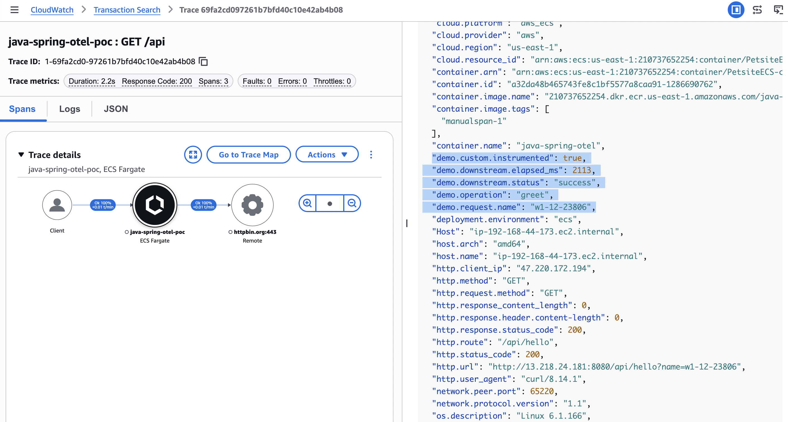

ఈ గైడ్ Java Spring Boot సేవను OpenTelemetry తో ఇన్స్ట్రుమెంట్ చేయడం, టెలిమెట్రీని AWS కి ఎగుమతి చేయడం, ECS/Fargate కి డిప్లాయ్ చేయడం మరియు traces/logs/Application Signals ప్రవర్తనను ధృవీకరించడం వంటి పూర్తి అభ్యాసాన్ని డాక్యుమెంట్ చేస్తుంది.
ఇది అమలు ఉదాహరణ శైలిలో వ్రాయబడింది మరియు రన్బుక్ లేదా వర్క్షాప్ హ్యాండ్ఔట్గా ఉపయోగించవచ్చు.
1) ఈ అభ్యాసం ఏమి ప్రదర్శిస్తుంది
- Java యాప్ నుండి ఎండ్-టు-ఎండ్ టెలిమెట్రీ:
- ట్రేసెస్ (X-Ray / Transaction Search)
- లాగ్లు (CloudWatch Logs OTLP ఎండ్పాయింట్ లేదా ECS పై
awslogs) - మెట్రిక్స్/Application Signals (CloudWatch Agent సైడ్కార్ మార్గం)
- వీటి మధ్య వ్యత్యాసం:
- Micrometer tracing bridge (
micrometer-tracing-bridge-otel) ట్రేసింగ్ API బ్రిడ్జింగ్ కోసం - Micrometer registries (
micrometer-registry-cloudwatch2,micrometer-registry-otlp) ఇవి మెట్రిక్స్-మాత్రమే సింక్లు
- Micrometer tracing bridge (
- env vars (
OTEL_*) ద్వారా OTLP ఎండ్పాయింట్ వైరింగ్, హార్డ్కోడ్ చేసిన Java స్థిరాంకాలు కాదు.
2) ఆర్కిటెక్చర్
+----------------------------------------------------------------------------------+
| Developer / Runtime Host |
| |
| loadgen.sh ---> Spring Boot app (:8080) |
| | |
| +--> @Observed method (DemoService.greet) |
| | +--> custom span attrs/events |
| | +--> downstream call to httpbin.org |
| | |
| +--> ADOT Java agent (-javaagent) |
| | |
| +--> OTLP traces ----> xray.<region>.amazonaws.com |
| +--> OTLP logs ------> logs.<region>.amazonaws.com |
| +--> AppSignals -----> monitoring.<region>.amazonaws.. |
| |
+----------------------------------------------------------------------------------+3) డిప్లాయ్మెంట్ టోపాలజీ (ASCII)
+-----------------------------------------------+
| Amazon ECS |
| Cluster: PetsiteECS-cluster |
+-----------------------------------------------+
|
v
+-------------------------------------+
| Fargate Task (awsvpc network mode) |
|-------------------------------------|
| container: java-spring-otel |
| - app.jar + ADOT javaagent |
| - OTEL_EXPORTER_OTLP_TRACES_*= |
| http://localhost:4316/v1/traces|
| - OTEL_AWS_APPLICATION_SIGNALS_*= |
| http://localhost:4316/v1/metrics|
|-------------------------------------|
| container: ecs-cwagent (sidecar) |
| - receives OTLP on localhost:4316 |
| - forwards to CloudWatch/X-Ray |
+-------------------------------------+
|
+-------------------+-------------------+
| | |
v v v
CloudWatch Logs X-Ray / Traces Application Signals4) OTLP ఎండ్పాయింట్ మ్యాపింగ్
| సిగ్నల్ | ఎండ్పాయింట్ ప్యాటర్న్ | సాధారణ env vars |
|---|---|---|
| ట్రేసెస్ | https://xray.<region>.amazonaws.com/v1/traces |
OTEL_EXPORTER_OTLP_TRACES_ENDPOINT, OTEL_EXPORTER_OTLP_TRACES_PROTOCOL=http/protobuf |
| మెట్రిక్స్ | https://monitoring.<region>.amazonaws.com/v1/metrics |
OTEL_EXPORTER_OTLP_METRICS_ENDPOINT (లేదా సైడ్కార్ ద్వారా App Signals మార్గం) |
| లాగ్లు | https://logs.<region>.amazonaws.com/v1/logs |
OTEL_EXPORTER_OTLP_LOGS_ENDPOINT, OTEL_EXPORTER_OTLP_LOGS_HEADERS |
ECS సైడ్కార్ మోడ్లో, యాప్ కంటైనర్ traces/metrics ను http://localhost:4316/... కి పాయింట్ చేస్తుంది మరియు CloudWatch Agent ఫార్వర్డింగ్ను నిర్వహిస్తుంది.
5) ఈ రిపోలో ఉపయోగించిన ఇన్స్ట్రుమెంటేషన్ మోడల్
5.1 డిపెండెన్సీలు
micrometer-tracing-bridge-otelpom.xmlలో ఉంది.- ట్రేసింగ్ కోసం
micrometer-registry-cloudwatch2లేదాmicrometer-registry-otlpపై డిపెండెన్సీ లేదు.
5.2 ఆటో + మాన్యువల్ ట్రేసింగ్
- ADOT Java agent నుండి ఆటో ఇన్స్ట్రుమెంటేషన్ framework/client spans ను క్యాప్చర్ చేస్తుంది.
DemoService.greet()లో మాన్యువల్ ఎన్రిచ్మెంట్ జోడించబడింది:- అట్రిబ్యూట్లు:
demo.operation,demo.request.name,demo.downstream.status,demo.downstream.elapsed_ms,demo.custom.instrumented - ఈవెంట్లు:
demo.greet.start,demo.httpbin.success,demo.httpbin.failure recordException(...)మరియుsetStatus(ERROR, ...)తో ఎర్రర్ రికార్డింగ్
- అట్రిబ్యూట్లు:
6) స్క్రీన్షాట్ (ట్రేస్ వివరాలు)
వర్క్షాప్/డెమో డాక్స్ కోసం క్రింద అందించిన స్క్రీన్షాట్ను ఉపయోగించండి:

7) AWS కన్సోల్లో టెలిమెట్రీని ఎక్కడ చూడాలి
ట్రేసెస్ (ప్రాథమిక)
- X-Ray → Traces
- రీజియన్:
us-east-1 - సమయ పరిధి: చివరి 15–60 నిమిషాలు
- సేవ:
java-spring-otel-poc
కస్టమ్ ఫీల్డ్ల కోసం:
- ట్రేస్ తెరవండి → సెగ్మెంట్
java-spring-otel-poc→ Metadata - ఈ కీలను చూడండి:
demo.operationdemo.request.namedemo.downstream.statusdemo.downstream.elapsed_msdemo.custom.instrumented
లాగ్లు
- ECS యాప్ లాగ్లు:
/ecs/java-spring-otel - CW agent సైడ్కార్ లాగ్లు:
/ecs/ecs-cwagent-java-spring-otel - లోకల్ OTLP లాగ్ గ్రూప్ (లోకల్గా రన్ అవుతుంటే):
/aws/otel/java-spring-otel-poc
Application Signals
- CloudWatch → Application Signals → Services
- సైడ్కార్ మార్గం ద్వారా నిరంతర ట్రాఫిక్ మరియు విజయవంతమైన మెట్రిక్స్ ఫార్వర్డింగ్ తర్వాత
java-spring-otel-pocకోసం చూడండి.
8) ముఖ్య విషయం
OpenTelemetry ఆటో ఇన్స్ట్రుమెంటేషన్ spans ను సృష్టించగలదు, కానీ విజయవంతమైన AWS అబ్జర్వబిలిటీ ఫలితాలు ఇప్పటికీ దీనిపై ఆధారపడి ఉంటాయి:
- సరైన OTLP ఎండ్పాయింట్ వైరింగ్
- సరైన auth/ఫార్వర్డింగ్ మార్గం (తరచుగా మెట్రిక్స్/App Signals కోసం సైడ్కార్/కలెక్టర్ ద్వారా)
- ట్రేసింగ్ bridge vs మెట్రిక్స్ registries మధ్య సరైన వ్యత్యాసం
- నిరంతర ట్రాఫిక్ మరియు సరైన కన్సోల్ వ్యూ (ట్రేసెస్ కోసం X-Ray)